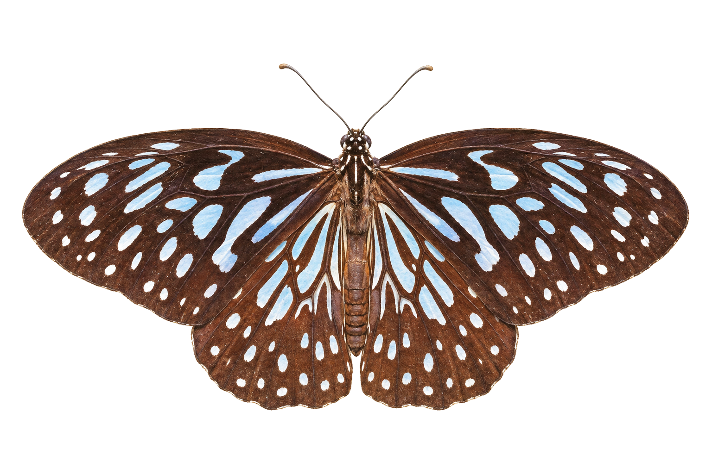

Nymphalidae · 120 / 165
Tirumala septentrionis
Tirumala septentrionis

বৈশিষ্ট্য ও শনাক্তকরণ
গাঢ় ডানায় নীলচে-সাদা লম্বা দাগ; কাছাকাছি Tirumala প্রজাতির সঙ্গে তুলনা জরুরি।
স্ত্রী ও পুরুষের পার্থক্য
পুরুষের পেছনের ডানার যৌনচিহ্ন লিঙ্গ শনাক্তকরণের সহায়ক।
আকার
ডানা মেলা অবস্থায় বিস্তার 75–95 মিমি। ভারতের Winged Jewels নির্দেশিকা-র মান; ওকিনাওয়ার নমুনার মাপ নয়। অঞ্চল, উপপ্রজাতি ও সূত্রভেদে পার্থক্য থাকে।
ওকিনাওয়ার দ্বীপে রেকর্ড
রেকর্ডকৃত দ্বীপের উদাহরণ: ওকিনাওয়া মূল দ্বীপ, ইশিগাকি, ইরিওমোতে, ইয়োনাগুনি, তাকেতোমি, কুরোশিমা, হাতেরুমা, হামাহিগা। এটি সব রেকর্ডস্থানের পূর্ণ তালিকা নয়।
আবাসস্থল
বনপ্রান্ত, বনপথ ও ঝোপযুক্ত উন্মুক্ত স্থান।এটি সাধারণ আবাসের বর্ণনা, ওকিনাওয়ায় প্রতিষ্ঠার প্রমাণ নয়।
জীবনযাপন ও অতিরিক্ত তথ্য
আগমন বা সাময়িক প্রজননের রেকর্ড অন্তর্ভুক্ত; তালিকার দ্বীপ বর্তমান স্থায়ী প্রতিষ্ঠার নিশ্চয়তা নয়।
শূককীট ও খাদ্য উদ্ভিদ
আঞ্চলিক সূত্রে ব্রাউনকাজুরা ও তাইওয়ান তাশিরোকাজুরা উল্লেখ আছে।
তথ্যসূত্র ও সহায়ক পাঠ
- 日本の蝶：形態・雌雄差
ডেটায় উল্লেখিত সূত্র দেখার তারিখ: 2026-11-10 - 沖縄蝶類生態図鑑：コモンマダラ
ডেটায় উল্লেখিত সূত্র দেখার তারিখ: 2026-11-10 - 大きさの追加出典：インドのWinged Jewels図鑑
ডেটায় উল্লেখিত সূত্র দেখার তারিখ: 2026-11-10
তথ্য সরবরাহকৃত ডেটার উপর ভিত্তি করে তৈরি (হালনাগাদ: ১০ নভেম্বর ২০২৬)। কোনো দ্বীপের রেকর্ড সেখানে বর্তমান স্থায়ী বসবাস বা সহজে দেখা পাওয়ার নিশ্চয়তা নয়। চিত্র নির্দেশক; শনাক্তকরণে বাস্তব নমুনা ও সূত্র মিলিয়ে দেখুন।